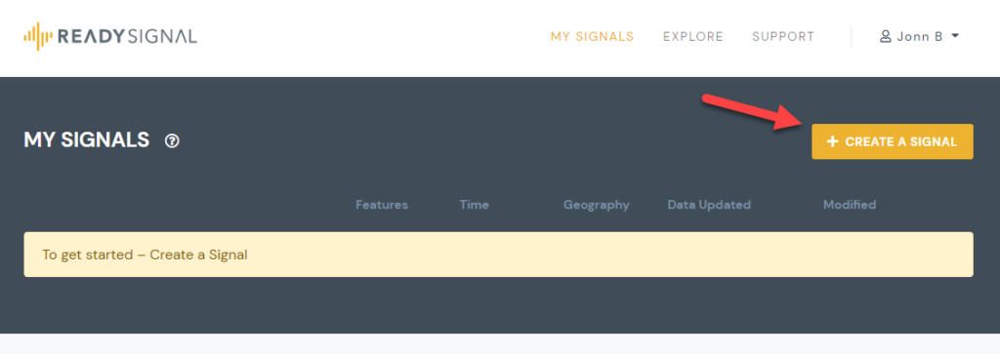
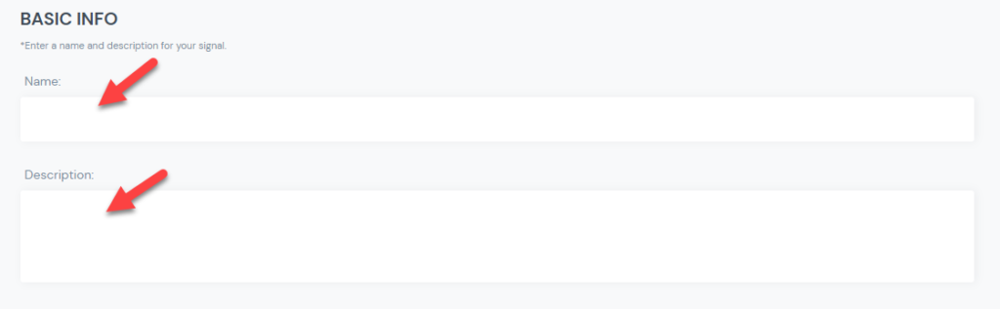
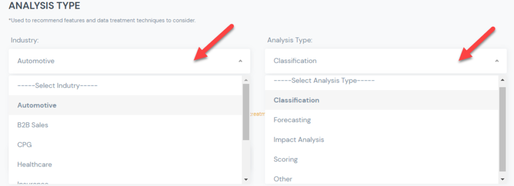
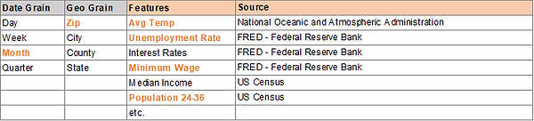
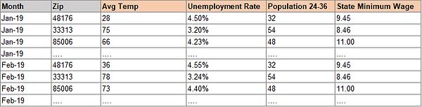
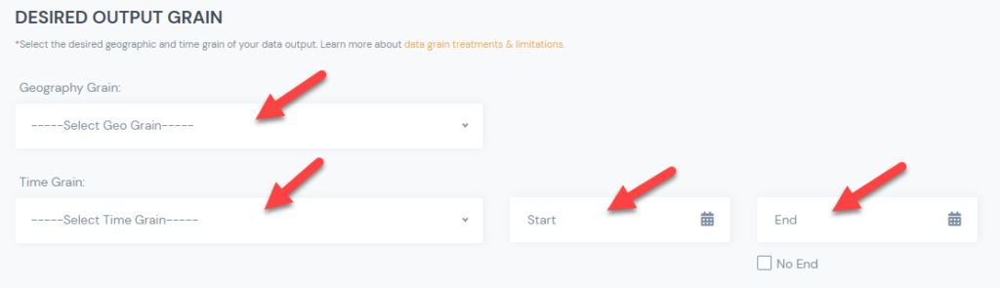
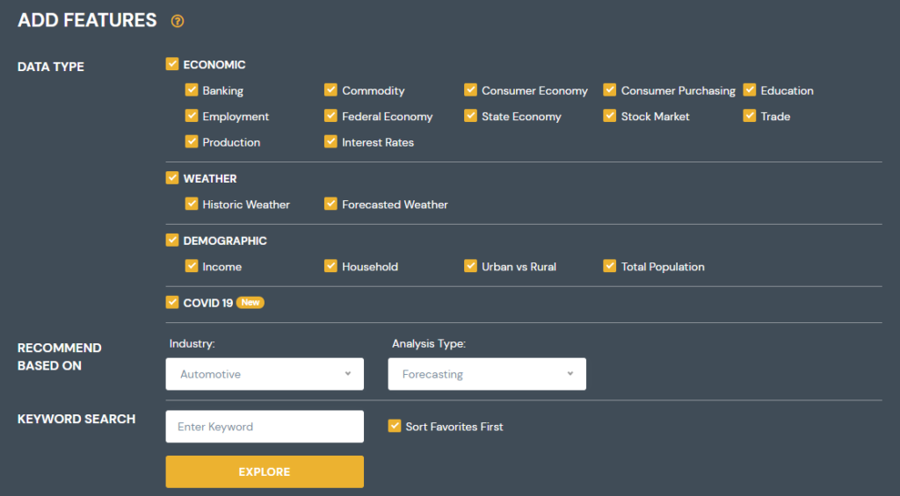
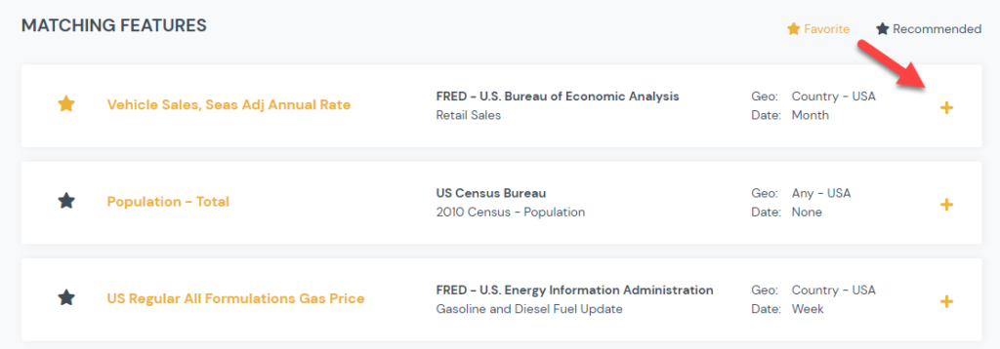
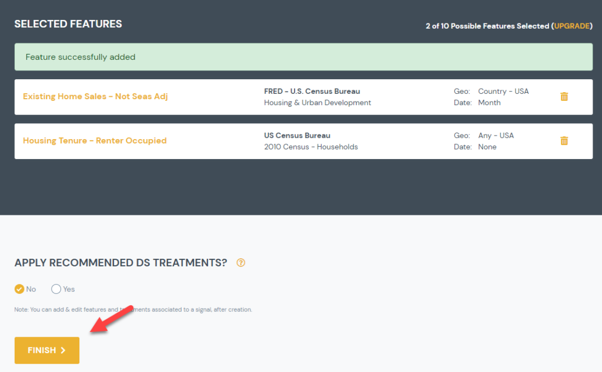

How to Create a Signal
Step by step walk though of how to create a signal from start to finish.
Step 1: Click Create Signal
- To get started click the Create Signal button on top right of page:

Step 2: Enter Basic Info
- Put in a name and a description for the signal you are creating.
- Note that these are only used for descriptive purposes.

Step 3: Select your analysis type
- You will enter your industry and analysis type.
- This information is used to recommend features (control data sets), you should consider including in your signal.

Step 4: Select Desired Output Grain
- This information will be used to determine the granularity of the signal output. The # of rows.
- You will need to select a geographic grain (City, State, Zip, etc.)
- You will need to select a time grain (Day, Week, Month, etc.)
- For example if you select a granularity of Month and Zip, you will get a unique row of data for each month and zip code combination:


- You will also need to select the start and end date of your signal. If you select “no end date”, the signal will always include the most recently available data.

* Learn more about how geographic and time grains work.
Step 5: Add Features – Filter Features
- You will start by filtering what features (control data sets) you want to look at.
- You can select or deselect any category.
- You can enter a keyword that will be used to look for signals with that word or phrase.
- Recommendations will be shown based on the Industry and Analysis Type you selected. You can change these on this page if you desire.
- Click explore to see matching results.

Step 6: Add Features – Select From Matching Features
- Features that match your criteria will be shown in the results.
- Any features you had previously favored will be shown at top of the results (Yellow stars). Those will be followed by system recommended features, based on the Industry and Analysis Type you selected (Grey stars). Other matching features will be shown in alphabetical order.
- For each feature you will see its name, the publisher and the “source” geographic and date grain. The source geo/date grain, shows the granularity of the originating data source. The Ready Signal system, will transform this data to match your desired output grain.
- You can click on the features name, to see more information about that particular feature.
- Once you see a feature you want to include, click on the “+” to add it to your signal.
- Repeat the process till you have added all the desired features to your signal.

Step 7: Add Features – Confirm Selected Features
- You will see a list of the features you have selected at the bottom of the page.
- You can click the trash can icon to remove it from your list
- You will be given the option to apply recommended Data Science treatments by default. You can always change this later. So if this is your first signal you can ignore this for now.
- Finally click Finish. At this point your signal has been created.

Next Steps:
- Once your signal is created you can continue to modify it until you are happy and ready to ingest it into your models.
- You can apply data science treatments to individual features
- You can add/remove/duplicate features
- You can edit basic signal details (name, description, etc.)
- You can get an output of your data (Download to CSV or Excel; Connect Live to Domo, R, or Python)
Related Resources: